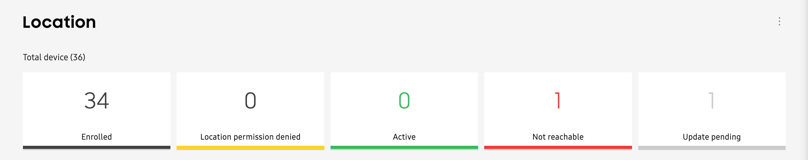
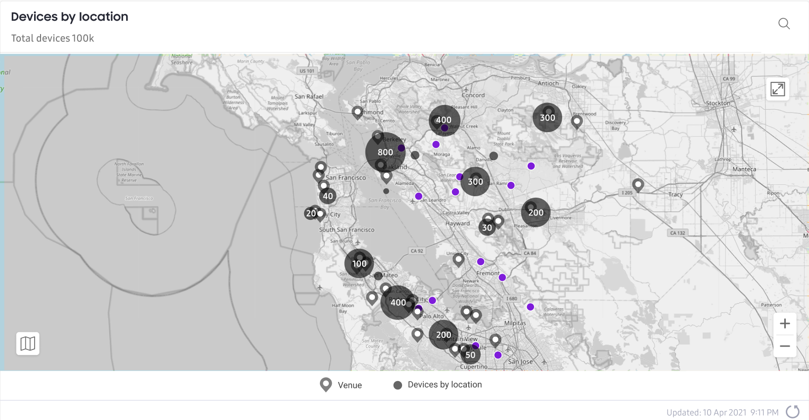

Use the location dashboard
Last updated July 26th, 2023
The Location dashboard is your hub for viewing your fleet’s location-related statuses and finding devices on a map. To launch the Location dashboard, select Location from the left navigation pane.
Device status
At the top of the Locations dashboard, you’ll find a grid that lets you view all location-related statuses for your device fleet.

The following statuses are displayed:
- Enrolled — The device is enrolled, but location data is unavailable.
- Location permission denied — The user has denied location tracking permission on their device.
- Active (Outdoor) — The device is returning its outdoor location information and is reachable.
- Active (Indoor) — The device is returning its indoor location information and is reachable.
Note
This status will only display after a venue has been created.
- Not reachable — The device’s location was not returned after an hour, or the location request was unsuccessful.
- Update pending — A manual location request was initiated, and Knox Asset Intelligence is currently attempting to retrieve the device’s location. If there is no response after an hour, a device will be added to the Not reachable status count.
Location map

The location map displays your device groupings — represented by gray bubbles on the map — as soon as you open the Location dashboard. When you zoom in on the map, the bubble updates to show the device distribution across a given area.
By default, the map opens in satellite view. You can switch between satellite and 2D maps by clicking the Map or Satellite button in the top-left corner of the map.
To find a specific device on the location map, click the Search icon and enter a device IMEI number. If the device is sending location data, you’ll see its last known location on the map, represented by a dot. Click X in the search field to clear your results and return to the default map view.
Is this page helpful?